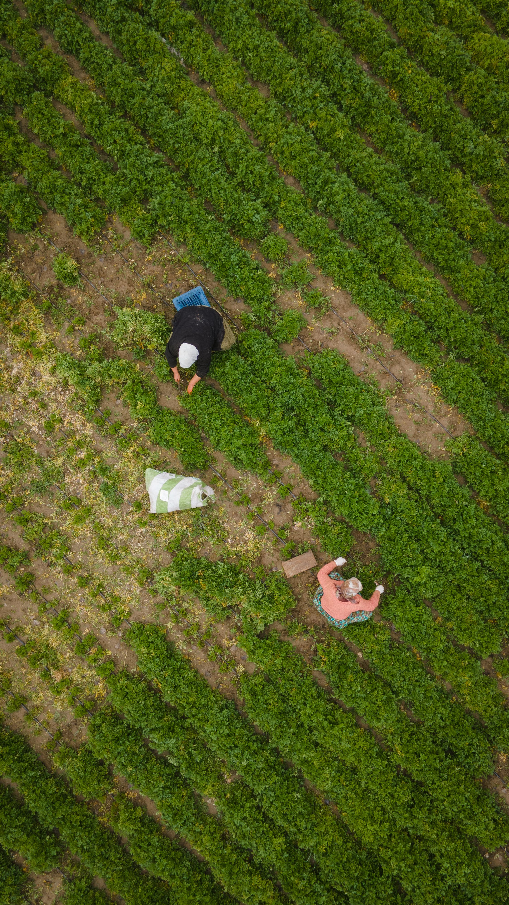
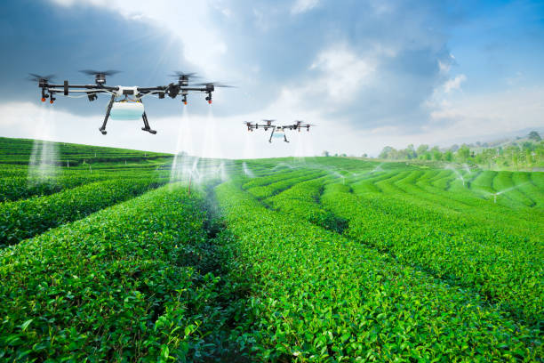
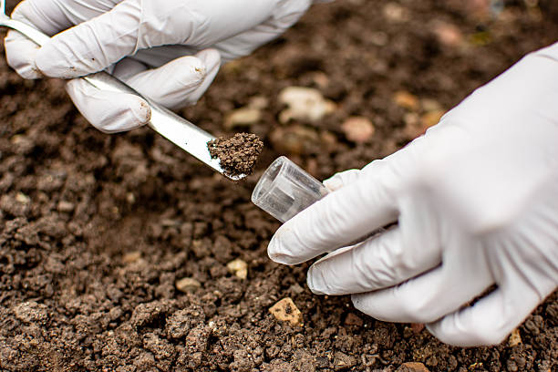

End-to-end agricultural solutions designed for Indian farmers — from soil to sale.
We provide a full spectrum of agri-tech and farm management services to maximise your land's potential.
Expert crop planning, variety selection, IPM and harvest scheduling for maximum yield with minimum chemical inputs.
Get Consultation →IoT-powered drip and sprinkler systems with real-time soil moisture sensors, automated schedules, and remote monitoring dashboards.
Learn More →Multispectral crop mapping, precision pesticide spraying, plant health imaging, and aerial boundary surveys.
Book a Flight →Laboratory-grade NPK and micronutrient testing, pH mapping, and fully customised soil amendment plans for every crop.
Test Your Soil →Direct connections to APMC mandis, retail chains, exporters, and FPOs so farmers get fair price for their produce.
Find Markets →Crop insurance advisory and enrollment support under PMFBY and private schemes, with claim assistance during crop loss events.
Get Covered →On-field workshops, digital literacy programmes, and KVK-certified agri training to upskill farmers at every level.
Enroll Now →Digital farm records, yield forecasting models, cost-benefit analysis, and custom reports to make data-driven decisions.
Explore Analytics →A simple 4-step engagement process designed to deliver fast results with minimum disruption to your farming calendar.
We visit your farm, assess soil health, water sources, existing infrastructure, and crop history to understand your unique situation.
Our agronomists create a tailor-made farm development plan with realistic milestones, cost projections, and expected ROI.
Our field team installs systems, deploys technology, provides hands-on training, and monitors the first crop cycle with you.
Season-after-season support via WhatsApp helpline, periodic farm visits, and an online dashboard to track your farm's progress.
Weekly field visits by our agronomists to track crop health, pest pressure, and nutrient status.

Agri-Drones10x faster than manual spraying with 30% less chemical usage. GPS-guided for perfect coverage every time.

Smart WaterSoil-moisture triggered irrigation that delivers water only when and where crops need it most.

Soil HealthNABL-accredited lab results within 5 business days with full PDF report and fertilizer schedule.
Book a free farm assessment and get a customised service plan within 48 hours.